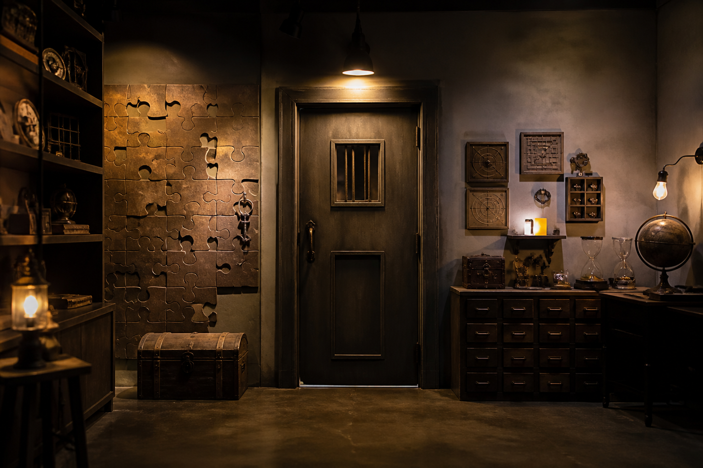

방탈출 카페
제한 시간 안에 힌트를 풀어 탈출하는 체험형 카페. 홍대·강남에 매장이 많습니다.
방탈출 카페는 테마 방에 들어가 제한 시간(보통 60분) 안에 퍼즐을 풀고 탈출하는 체험형 놀거리입니다. 홍대·강남·건대·대학로 등에 매장이 밀집해 있고, 영어 안내·힌트가 되는 곳도 늘고 있습니다.
보통 네이버·공식 사이트·앱으로 날짜·테마·인원을 예약합니다. 매장에서 규칙·비상 버튼을 안내받은 뒤 입장합니다. 난이도(별점)·장르(공포·추리·감성)를 미리 보고 고르면 실패가 적습니다. 힌트는 무전기·모니터로 요청하는 방식이 흔합니다.
가격 분위기
1인당 2~3만 원 전후가 흔합니다. 2인 요금이 더 높은 테마도 있으니 예약 화면을 확인하세요.
이용 팁
예약 시간에 꼭 맞춰 주세요. 힘주어 부수거나 강제로 여는 행위는 금지입니다. 공포 테마는 연령·심박 이슈가 있을 수 있으니 설명서를 읽으세요. 사진·스포일러는 매장 규칙을 따르세요.
방탈출 카페는 테마 방에 들어가 제한 시간(보통 60분) 안에 퍼즐을 풀고 탈출하는 체험형 놀거리입니다. 홍대·강남·건대·대학로 등에 매장이 밀집해 있고, 영어 안내·힌트가 되는 곳도 늘고 있습니다.
보통 네이버·공식 사이트·앱으로 날짜·테마·인원을 예약합니다. 매장에서 규칙·비상 버튼을 안내받은 뒤 입장합니다. 난이도(별점)·장르(공포·추리·감성)를 미리 보고 고르면 실패가 적습니다. 힌트는 무전기·모니터로 요청하는 방식이 흔합니다.
가격 분위기 1인당 2~3만 원 전후가 흔합니다. 2인 요금이 더 높은 테마도 있으니 예약 화면을 확인하세요.
이용 팁 예약 시간에 꼭 맞춰 주세요. 힘주어 부수거나 강제로 여는 행위는 금지입니다. 공포 테마는 연령·심박 이슈가 있을 수 있으니 설명서를 읽으세요. 사진·스포일러는 매장 규칙을 따르세요.